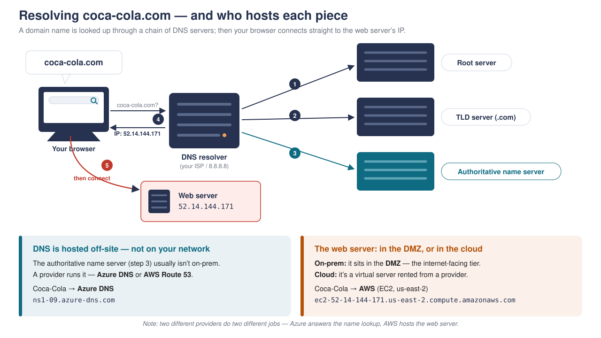

← Course home · Ethical Hacking
Week 2 · Reconnaissance & Footprinting¶
🧭 Kill chain · Phase 1 — Reconnaissance
What this page covers
- Reconnaissance as building a map of the target — adding pins (systems and people) and filling each one in
- WHOIS, DNS, and how a name resolves — and who really hosts each piece
- The goldmines: certificate transparency (crt.sh) and zone transfers
- Shodan, Google dorking, and document metadata
- People as an entry point, and the passive vs. active framework
- How a footprint feeds every later phase — and how defenders shrink it
Our running example — coca-cola.com
Every technique on this page is illustrated on one real target, coca-cola.com, using nothing but public sources. By the end you'll have watched a footprint of a global company come together from its name alone — and you'll do the same in this week's lab.
1. Reconnaissance is the phase that decides everything¶
Before an attacker touches a target, they learn everything they can about it. Think of the heist movie Ocean's Eleven: the robbery is the last twenty minutes, but most of the film is the crew studying the casino — the floor plan, the entrances and exits, the guard rotations, who works there and when. That studying is reconnaissance, and every real attack begins with it.
The job is to build a map of the target, and it has two halves:
- Add as many pins as you can — every system and person that could be a way in.
- Fill in each pin — as much detail about each one as you can find.
And every pin is one of two kinds — a system (a domain, a server, a piece of software) or a person (an employee, their role, their routine). A company is attacked through its machines and its humans, so we map both. The finished map is called a footprint: the target's whole attack surface.
The other important split is how you gather each pin:
| Passive reconnaissance | Active reconnaissance |
|---|---|
| Uses only third-party / public sources | Interacts with the target directly |
| The target sees nothing | The target can log your request |
| Stealthy, essentially untraceable | Louder — begins to carry legal weight |
You always start passive — squeeze every drop out of public data before you do anything the target could notice. Almost everything on this page is passive; we'll flag the one active step when we reach it.
2. What we're mapping: the enterprise, from the outside¶
Recall the enterprise architecture from Week 1. A company keeps its clients, servers, and data behind a strong network perimeter — firewalls, IDS/IPS, routers. From the outside, that internal structure is essentially a black box.
But not everything is hidden. Some systems are deliberately exposed to the world — they live in the DMZ (the demilitarised zone), the internet-facing tier. The web server you reach when you visit the site, and the mail server that receives the company's email, both sit in the DMZ. Those are the front doors. Behind a second firewall are the guarded internals you can't see from outside — and off to the side are the cloud/SaaS services and partners the company relies on, each of which is another possible way in.
So reconnaissance is casing the building: which doors face the street, which are guarded, and who comes and goes? Most of it we can answer from public information, without the target ever knowing.
3. WHOIS — the deed¶
The first thing you can do is look up the domain in WHOIS, which returns the domain's registration record. Think of it as the deed to a house: it says who owns it.
For coca-cola.com, the registrant is The Coca-Cola Company, and the domain is registered through MarkMonitor — a corporate brand-protection registrar that large multinationals use, with the contact details locked down. A small company — a cake shop registering cakeshop.com — might instead leak a personal name, email, and phone right here. So even the deed tells you who you're up against.
$ whois coca-cola.com
Registrant Organization: The Coca-Cola Company
Registrar: MarkMonitor Inc.
Name Server: ns1-09.azure-dns.com
Name Server: ns2-09.azure-dns.net
...
4. DNS — the address, and how it resolves¶
If WHOIS is the deed, DNS (the Domain Name System) is the address book. It's what turns a name like coca-cola.com into the IP address your browser actually connects to — and reading it leaks the layout of a company's front-facing infrastructure.
How a name becomes a connection. When your browser needs coca-cola.com, it asks a DNS resolver (usually your ISP's). The resolver walks a chain — a root server points it to the .com (TLD) server, which points it to the authoritative name server that actually holds the records — and gets back the IP. Then your browser connects straight to the web server at that IP.

Two things worth pinning down, because students often trip on them:
- The authoritative name server is almost never on the company's own network — a provider runs it. Coca-Cola's is Azure DNS (
ns1-09.azure-dns.com). - The web server it points to is a different story: on-prem it sits in the DMZ; in the cloud it's a rented virtual server. Coca-Cola's is on AWS (
52.14.144.171, an EC2 host inus-east-2).
So the company that answers the name lookup (Azure) and the company that hosts the web server (AWS) can be — and here are — two completely different providers. That's normal, not a contradiction.
The record types you'll read:
| Record | What it is | Coca-Cola shows… |
|---|---|---|
A / AAAA |
the host's IP — the front door (web server) | 52.14.144.171 |
MX |
the mail gateway (mail room) | …pphosted.com → Proofpoint |
NS |
the name servers that answer for the domain | …azure-dns.com → Azure |
TXT |
notes proving which third parties act for the domain | its whole SaaS list (below) |
Reading the records on the command line¶
The website tools are convenient, but the lab uses the command line. nslookup (name-server lookup) is on every OS; dig does the same with tidier output.
$ nslookup coca-cola.com # A record — the web server IP
Address: 52.14.144.171
$ nslookup -type=NS coca-cola.com # name servers — hosted by Azure
coca-cola.com nameserver = ns1-09.azure-dns.com
$ nslookup -type=MX coca-cola.com # mail — Proofpoint
coca-cola.com mail exchanger = mxa-0037a502.gslb.pphosted.com
$ nslookup -type=TXT coca-cola.com # the SaaS supply chain (below)
...
# dig does the same, e.g.: dig +short MX coca-cola.com
That MX record already hands you their email defence — Proofpoint. If you were going to phish an employee, you now know the filter your email has to get past.
Why TXT records leak the SaaS supply chain¶
TXT records exist so a company can publicly declare "these third parties are authorised to act for us." It does that for two legitimate reasons — domain verification (a SaaS vendor gives you a token to prove you own the domain) and email authorisation (the SPF record lists every service allowed to send mail as you). Both require naming the vendor — so the vendor list falls out as a side effect.
For Coca-Cola, TXT reveals a whole stack: Microsoft 365, Salesforce, Atlassian (Confluence/Jira), DocuSign, Adobe (campaigns), and — the tell — KnowBe4, a security-awareness training platform. From one record you learn which login pages to clone for a phishing attack and that their staff are trained to spot it.
See it all at once — DNSDumpster
DNSDumpster.com runs these lookups for you and draws the result as a visual map — hosts, mail, name servers, and providers in one picture. Great for a quick overview before you drill in with nslookup/dig.
5. The goldmines: crt.sh and zone transfers¶
The front door isn't the only door. Two public sources surface the other entrances.
crt.sh — certificate transparency (the side doors)¶
Here's the trick: you can't get a public TLS certificate without the hostname being logged in public certificate-transparency logs. So certificate names are hostnames. crt.sh lets you search every certificate ever issued for a domain — and buried among the polished brands are the leftovers: dev, staging, sso, vpn hosts that got a one-off certificate and were forgotten. Those forgotten hosts are usually the softest way in, and each one is a new pin on the map.
One net, not the only net
crt.sh only catches hosts that got their own public certificate. A wildcard cert (*.coca-cola.com) covers a subdomain without naming it, and internal/self-signed certs never hit the public logs — so crt.sh misses those. That's why you combine it with DNS enumeration and OSINT: each tool finds pins the others miss.
Zone transfers — asking the name server for everything¶
A zone transfer (AXFR) is a legitimate feature: a company's backup name server periodically asks the main one for a full copy of its records. The only thing protecting it is that the main server should refuse that request from anyone who isn't an authorised backup. Ask a well-run name server and you get refused — which is the correct, secure answer. Ask a misconfigured one and it dumps the entire zone: every host, including the internal-looking ones you couldn't otherwise see.
# 1) Coca-Cola — the CORRECT, secure result:
$ dig AXFR coca-cola.com @ns1-09.azure-dns.com
; Transfer failed. # refused — exactly right
# 2) A domain built to be vulnerable, for teaching:
$ dig AXFR zonetransfer.me @nsztm1.digi.ninja
; (dumps the entire zone — hosts, mail, internal names)
This is the one active step
Reading WHOIS, DNS, and certificate logs is passive — the target never knows. But a zone transfer sends a request to the target's own name server and asks it to act, so it can be logged. This is where recon crosses from passive into active. (It's still not scanning — that's probing the machines directly, which is next week.)
6. The front door up close: Shodan¶
Shodan (shodan.io) is a search engine for internet-connected devices. It continuously scans the internet and records what's exposed and what software each host runs — so you search its results without ever touching the target. Look up Coca-Cola's web-server IP and you learn the front door in detail:
- Open ports 80 (nginx) and 443 (Apache HTTP Server), hosted on AWS, us-east-2.
- The software versions — and a list of known vulnerabilities for those versions, including a critical one rated 9.8.
Shodan implies vulnerabilities — it doesn't confirm them
Shodan reads the version banner and lists every CVE known for that version. It has not tested the server — it may already be patched. Treat these as leads to confirm by scanning (next week), not proven holes.
Why versions matter — Equifax (2017)
Coca-Cola's server is probably patched — but don't assume, because a single unpatched flaw is exactly how the Equifax breach happened. Equifax — a credit bureau (a credit-reporting agency like Experian and TransUnion) — failed to patch a vulnerability in Apache Struts, a web-application framework (a different Apache project from the web server above). The result: the personal data of about 147 million people — names, Social Security numbers, dates of birth — was exfiltrated. Patch your internet-facing systems.
7. When the company leaks: Google dorking & metadata¶
Companies also leak information unwittingly — and Google has already indexed most of it.
Google dorking uses search operators to surface exactly that material:
site:coca-cola.com filetype:pdf → documents published on the domain
intitle:"index of" site:coca-cola.com → directory listings left open
Documents carry hidden metadata. Download a PDF and run exiftool on it, and the Author/Creator fields often reveal an internal username — or a vendor. On a Coca-Cola retirement-plan PDF, the creator turns out to be Ascensus, their retirement-plan provider. That's a new pin — and it isn't even Coca-Cola; it's a partner.
The partner problem — Target (2013)
Coca-Cola itself may be locked down, but a partner may not be. That's exactly the Target breach. The attackers didn't go through Target's front door — they found Fazio Mechanical, an HVAC vendor with weak security controls, and phished a Fazio employee for credentials. Because Target let that vendor into its network — and hadn't properly segmented it — the attackers pivoted from Fazio into Target, planted malware on the point-of-sale checkout terminals, and scraped about 40 million payment-card numbers. Your weakest link may be a company you don't even control.
8. People are pins too¶
Reconnaissance isn't only about systems — people hold the access. On LinkedIn you can find a company's CIO, see who reports to them in IT, and map the org chart — every name a pin, and the raw material for a targeted phish.
How far people-recon goes — the bank job
A red-teamer named Jayson Street is hired by banks to break in and expose their gaps. He pulls the branch's staff off LinkedIn, zooms into their profile photos to copy the badges and lanyards they wear, and uses Google Street View to learn the layout. Then he sits at the pub where they drink after work and overhears a complaint about a VP furious over a botched software update. The next morning he walks up with a box of donuts so someone holds the door, hands a teller a fake memo from that VP and a "patch" USB stick, and — out of fear of the VP — they plug it in. Full remote access. The people intel told him who to be; the overheard gossip gave him a believable story. That ending — a person tricked, not a machine hacked — is social engineering, which we cover in Week 12.
9. Passive vs. active — the framework¶
Now we can put a name to everything. Every pin you gather answers two questions — how did you get it, and what is it about:
| Systems | People | |
|---|---|---|
| Passive (never touch the target) | WHOIS · DNS · crt.sh · Shodan · Google dorking · metadata | LinkedIn · job postings · a leaked PDF |
| Active (interact — they can log you) | zone transfer · ping · banner grab (→ shades into next week's scanning) | eavesdropping · a pretext phone call · tailgating |
Almost everything on this page lives in the top row — passive. The single active thing we did was the zone transfer. The rule is: start top-left, squeeze passive first, and only go active when you must — because passive recon is essentially untraceable, and active recon starts leaving a trail.
10. The recon toolkit¶
The whole toolkit on one table — and it doubles as a preview of this week's lab.
| What the attacker does | Tools | What it reveals |
|---|---|---|
| Find who owns the domain | whois · who.is |
owner, registrar, dates — the "deed" |
| Find all subdomains (incl. forgotten hosts) | crt.sh | every host ever issued a certificate |
| Map the web server & tech stack | nslookup / dig · Shodan · browser DevTools |
name → IP; server software & versions |
| Find mail & name servers | nslookup / dig · dnsenum (MX, NS) |
mail = Proofpoint; DNS = Azure |
| List the SaaS / cloud they use | nslookup -type=TXT / dig TXT |
SPF + tokens name their providers |
| Surface exposed documents & directories | Google dorking | leaked PDFs, open directories, login pages |
| Read document metadata | exiftool |
internal usernames, vendors, software |
| Gather people intel | LinkedIn, job postings | names, roles — who to target |
| Pull it all into one footprint | theHarvester, DNSDumpster | consolidated subdomains, hosts, emails |
11. The footprint — the output that drives everything¶
The deliverable of the week is a target profile: domains, live hosts, IP ranges, exposed services and versions, the SaaS/vendor supply chain, and named people with roles. That profile drives everything next — you scan what you found (Week 3), you exploit the exact versions you fingerprinted, and you social-engineer the specific people you identified (Week 12). Recon isn't a warm-up; it's the foundation the whole attack is built on.
Defender's view¶
How this looks from the SOC seat
Passive recon is essentially undetectable — it happens on infrastructure the defender doesn't control (search engines, WHOIS, certificate logs, LinkedIn). You'll never get an alert that someone looked you up. Active footprinting (a zone-transfer attempt, DNS brute-forcing) may surface as odd request patterns, but it's easy to lose in the noise.
Best control: you can't detect what you can't see, so shrink the footprint — disable DNS zone transfers, strip metadata from published documents, close and lock down non-production hosts (dev, staging) so they aren't internet-facing, monitor your own certificate-transparency logs for shadow assets, and run OSINT against yourself to find what an attacker would. The smaller and more controlled the footprint, the less there is to find.
This week's lab¶
ACI Skill Lab — Footprinting & Reconnaissance Techniques with AI
You'll do exactly what's on this page: search-engine footprinting, certificate transparency (crt.sh), social-networking recon, website footprinting, and DNS footprinting with nslookup and dnsenum. You'll also use AI assistants — ShellGPT and Kali GPT — where you describe in plain English what you want and the tool builds and runs the command. As you go, keep asking the defender's question: how would I have made this harder to find?
Next week → we stop finding and start probing: Scanning & Enumeration.
References¶
- NIST SP 800-115 §4 (review & target identification). Free PDF
- OSINT Framework. osintframework.com
- MITRE ATT&CK — Reconnaissance (TA0043). attack.mitre.org
- Target breach — Krebs on Security. Target Hackers Broke In Via HVAC Company
- Equifax breach — U.S. GAO report. GAO-18-559